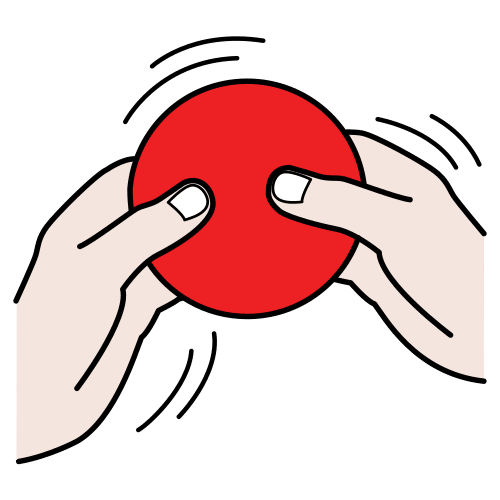
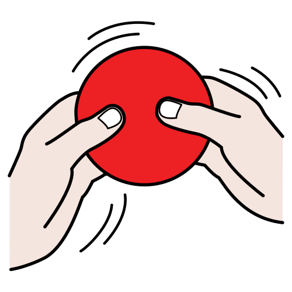
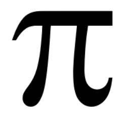

Diccionario
Manejar


Ya sabes que manejar más o menos cifras decimales puede hacer que los resultados de un problema cambien. Pero, no siempre es fácil saber cuántas cifras decimales debemos utilizar ya que estas influyen en el valor final.
Es el momento de aprender cómo decidir las cifras que son importantes, como aproximar su valor para finalmente conocer el error qué cometemos, si este es significativo o no.
¡Adelante!
Manejar + o – cifras decimales
Hacen que los resultados de un problema cambien.
No es fácil saber cuántas cifras decimales debemos utilizar.
Estas cifras influyen en el valor final.
Vamos a aprender cómo decidir las cifras que son importantes,
cómo aproximar su valor para conocer el error
y si este error es significativo o no.
¡Adelante!
Cómo sabes el número π, es la relación entre el diámetro y la longitud de una circunferencia y tiene infinitos decimales que no se repiten en orden.
En esta tarea vas a conocer un poco más este famoso número.
¿Eres capaz de calcular cuántos folios necesitarías para escribir el número con todas las cifras decimales que se conocen?
Obra publicada con Licencia Creative Commons Reconocimiento Compartir igual 4.0